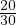
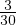
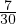

Sagedus näitab, kui tihti mingi sündmus toimub.
Suhteline sagedus näitab, kui suure osa moodustab kindel sündmus kõikide
vaadeldud sündmuste arvust. Suhtelist sagedust väljendatakse protsentides.
Sagedustabel kirjeldab sündmuste esinemise sagedust.
Sagedustabel õpilaste vanuste kohta, klassis on 30 õpilast.
| Vanus | sagedus | suhteline sagedus |
| 15 | 20 |  ≈ 0.66 ≈ 67% |
| 16 | 3 |  = 0.1 = 10% |
| 14 | 7 |  ≈ 0.23 = 23% |